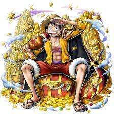
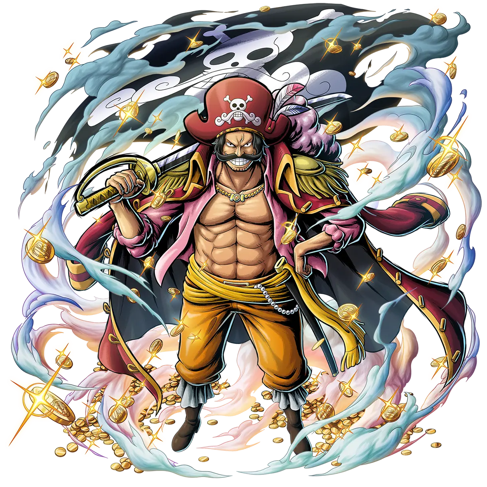
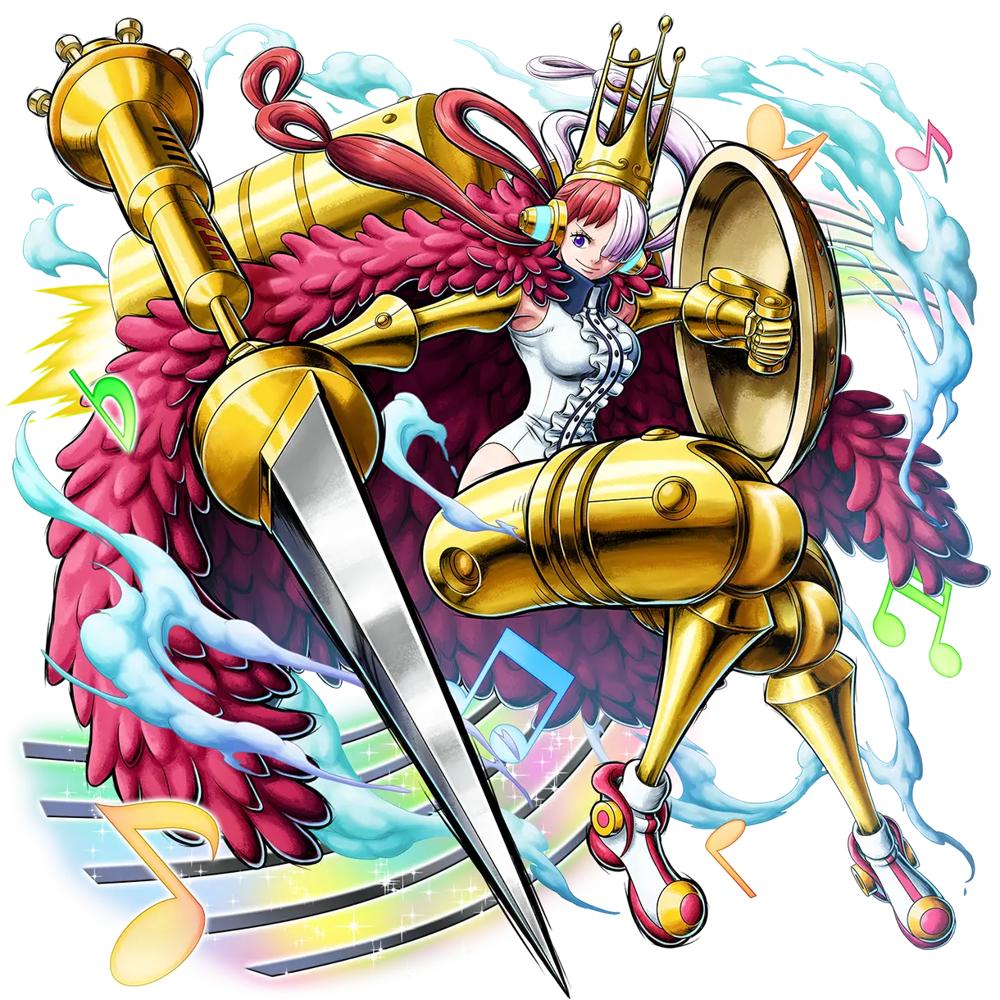
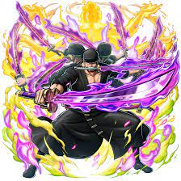
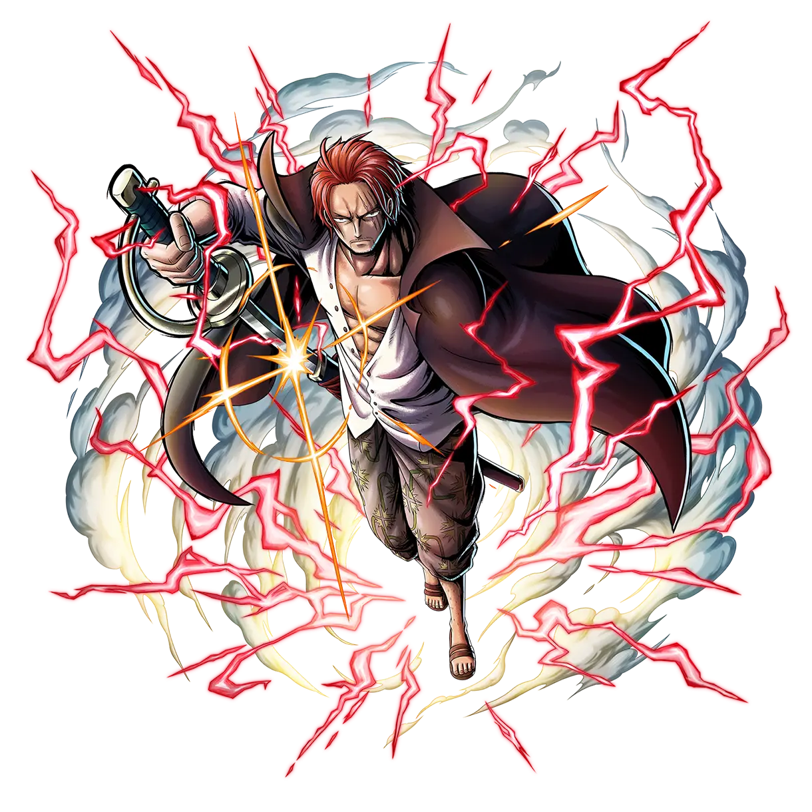

Home | Characters | Maps | Information | Feedback & Support Us |
| Character | Information |
|---|---|
|  |
Set Medal
Luffy Adalah Seorang Bajak Laut YG ingin Menjadi Raja Bajak Laut Dan Ingin Mendapatkan harta karun Legendaris One Piece. |
|  |
Set Medal
Roger adalah seorang Character yg sudah menjadi raja bajak laut dan sudah pernah ke pulau terakhir yg bernama lautghtale,pulau dimana one piece berada dan ini orag yg memotivasi luffy dan seluruh Character yg ada di one piece untuk Mendapatkan harta legenda itu. |
|  |
Set Medal
Uta adalah seorang Character yg dibuang oleh orangtuamya dan diambil akagami no shanks yg diangkat anaknya, dan dia mengaruhi lautan bersama bajak laut akagami no shanks menadi seorang penyanyi. |
|  |
Set Medal
Zoro adalah seorang Character yg menjadi anggota dari bajak laut topi jerami bersama sang MC kita yaitu Monkey D Luffy yg berjabatan sebagai org no 2 terkuat di bajak laut topi jerami. |
|  |
Set Medal
Shanks adalah seorang Character ayahnya uta yg mengadopsi uta sebagai anak dan dia ingin mendapat one piece serta menjadi saingan MC Kita yaitu Monkey D Luffy dan menjadi villain utama di anime maupun manganya. |